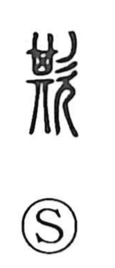

欺

Uncategorized
Kun: azamuku | On: gi
to deceive ・ to cheat ・ to lie
Explanation
A phonetic–semantic character built on 其 as the phonetic, 其 originally depicting a square dustpan (箕). In ancient exorcistic rites such as oniyarai, performers donned a large square mask called mōki (蒙倛) to impersonate a deity. From this image of hiding one’s face and feigning another identity arose the meaning “to deceive, to lie,” which later broadened to general deceit toward others.